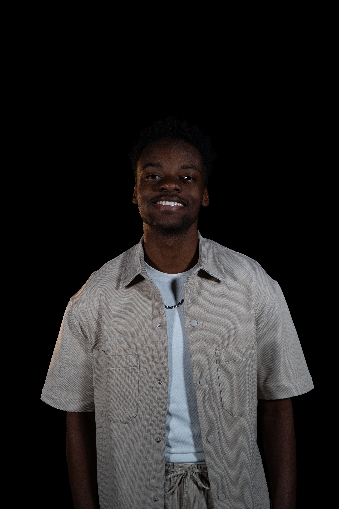

Andy est le créateur du site Y-Noubliables dont le but est de connaître le nom de ses camarades. Selon ses parents ce serait un étudiant hors pair prêt à tout pour réussir ses études, selon ses pairs, un mec déjanté, qui met des tunnels dès qu'on parle de code et qui est imprévisible : on ne sait pas si l'on va avoir une conversation normale avec lui, s'il va se mettre à rire sur une blague stupide ou s'il va se déshabiller et faire un strip-tease pour créer un effet de surprise.